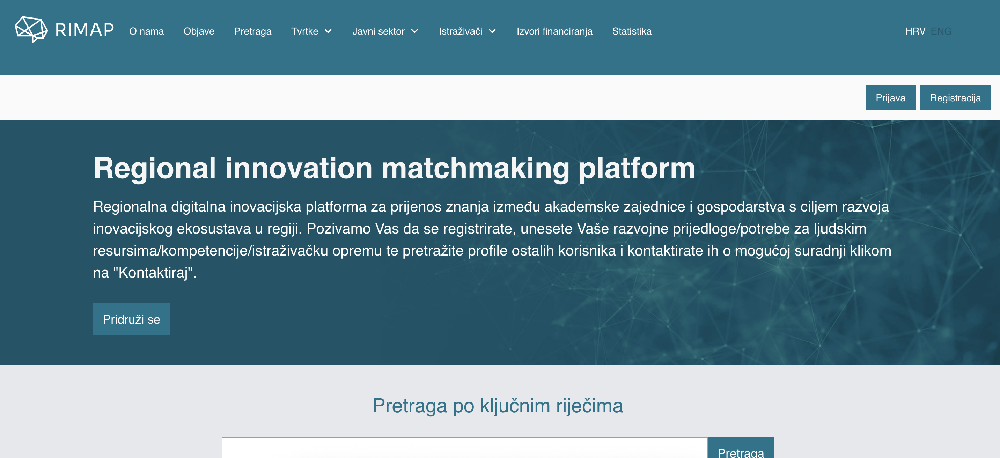
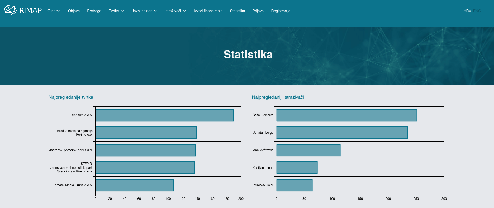
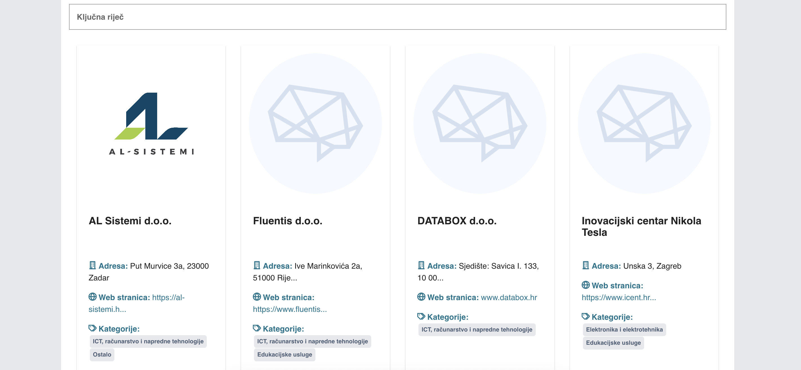
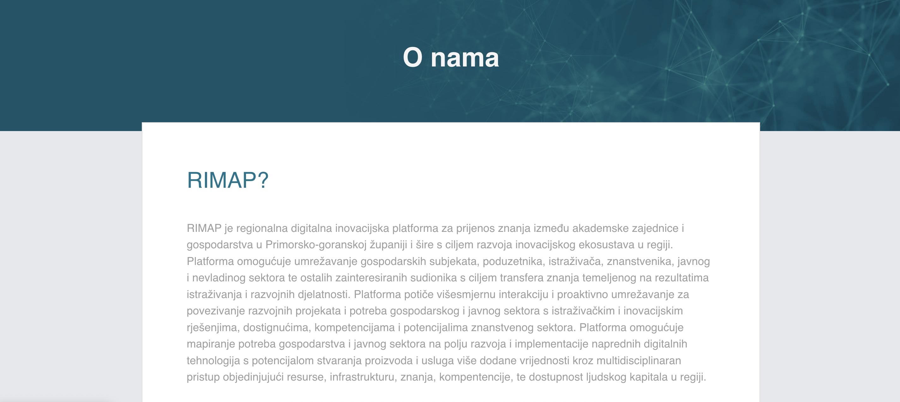

Rimap
Rimap je regionalna platforma za digitalne inovacije u Primorsko-goranskoj županiji usmjerena na povezivanje akademske zajednice, gospodarstva i javnih institucija. Podržava prijenos znanja, zajedničke istraživačke i razvojne inicijative te uvođenje digitalnih tehnologija kako bi se osnažio lokalni inovacijski ekosustav i stvarali proizvodi i usluge visoke dodane vrijednosti.
Rimap is a regional digital innovation platform in Primorje–Gorski Kotar County focused on connecting academia, businesses, and public institutions. It supports knowledge transfer, joint research and development initiatives, and the adoption of digital technologies to strengthen the local innovation ecosystem and create high-value products and services.

TehnologijeTechnologies
IzazovChallenge
Okupiti dionike iz akademske zajednice, industrije i javnog sektora na jednom mjestu i olakšati njihovu suradnju — uz platformu koja ostaje pregledna, vjerodostojna i jednostavna za snalaženje.
Unify stakeholders from academia, industry, and the public sector in one place and make collaboration easy—while keeping the platform clear, credible, and simple to navigate.
RješenjeSolution
Izgraditi skalabilnu digitalnu platformu utemeljenu na sadržaju, s promišljenom informacijskom arhitekturom, dosljednim vizualnim identitetom i intuitivnim tijekovima koji podržavaju istraživačku suradnju, inovacijske programe i strukturirani prijenos znanja u cijeloj regiji.
Build a scalable, content-driven digital platform with a strong information architecture, consistent branding, and intuitive flows that support research collaboration, innovation programs, and structured knowledge transfer across the region.
Prikaz projektaProject Showcase



Ključne značajkeKey Features
Regionalno inovacijsko središteRegional innovation hub
Središnja platforma koja povezuje gospodarstvo, akademsku zajednicu i javne institucije u Primorsko-goranskoj županiji.
Centralized platform connecting businesses, academia, and public institutions in Primorje–Gorski Kotar County.
Prijenos znanjaKnowledge transfer
Podržava komercijalizaciju i praktičnu primjenu akademskog znanja kroz strukturirani sadržaj i digitalne alate.
Supports commercialization and practical application of academic expertise through structured content and digital tools.
Multidisciplinarna suradnjaMultidisciplinary collaboration
Omogućuje međusektorsku suradnju u području istraživanja i razvoja te digitalnih tehnologija, koristeći regionalne resurse i talente.
Enables cross-sector cooperation across R&D and digital technologies using regional resources and talent.
Jasna informacijska arhitekturaClear information architecture
Jednostavna navigacija i organiziran sadržaj zahvaljujući kojima je prilike za suradnju lako pronaći i razumjeti.
Simple navigation and organized content that make collaboration opportunities easy to find and understand.
Sadržaj usmjeren na vjerodostojnostCredibility-first content
Profesionalna prezentacija koja gradi povjerenje za partnerstva, programe i istraživačke inicijative.
Professional presentation that builds trust for partnerships, programs, and research initiatives.
Responzivan dizajnResponsive experience
Prilagođeno za stolna računala, tablete i mobilne uređaje.
Optimized for desktop, tablet, and mobile devices.